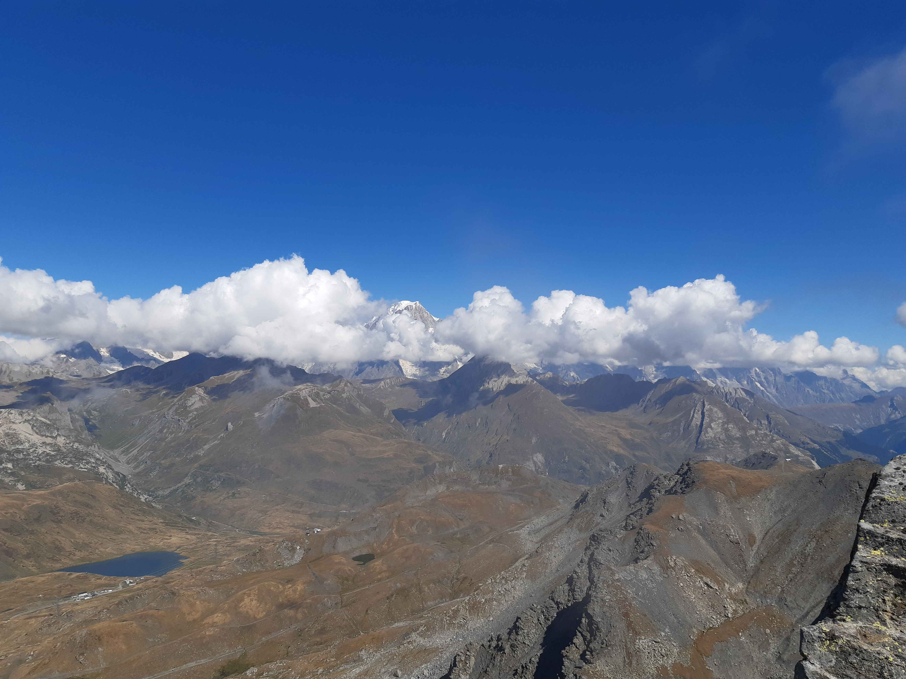
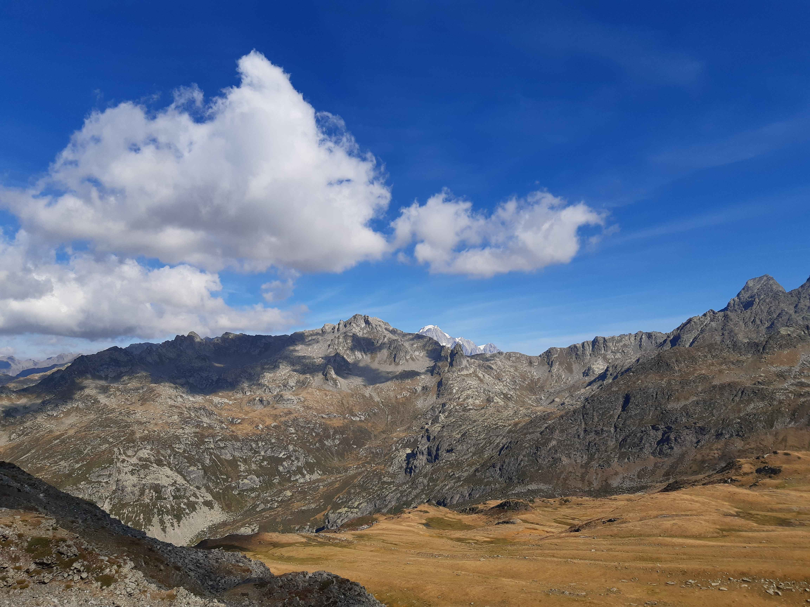
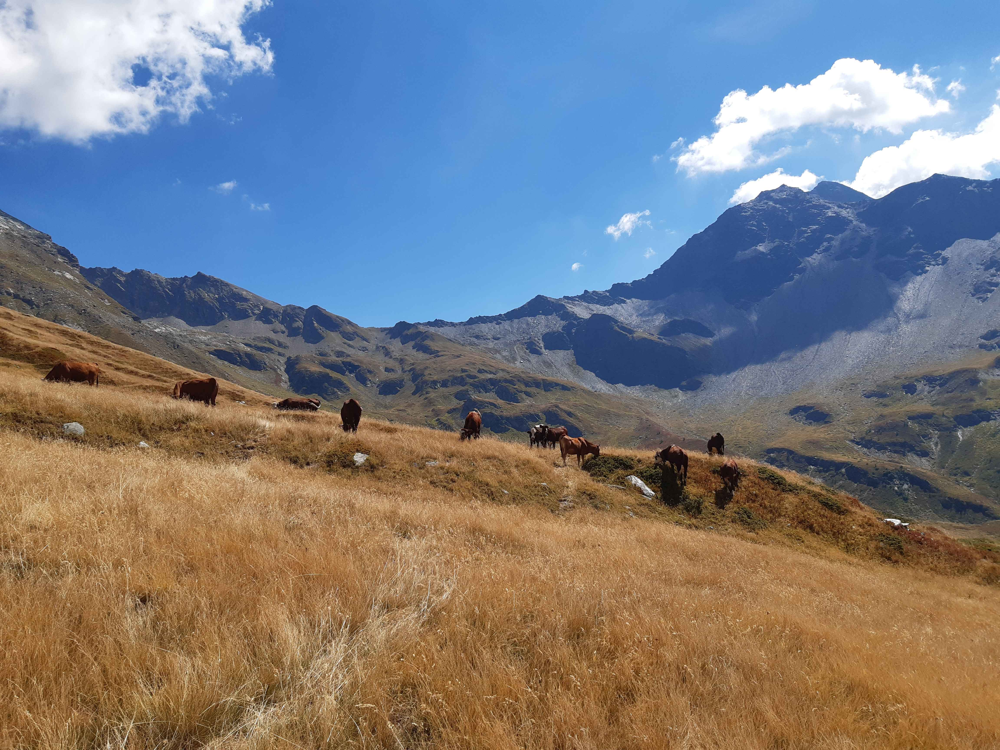

Description de l'itinéraire : les Laix - le Châtelard - les Eucherts - col de la Traversette - mont Valezan - col de la Traversette - col des Embrasures - la Rosière
Distance : 21 km
Dénivelé positif : 1700 m
Point le plus bas : 1434 m
Point le plus haut : 2891 m
Cotation en l'absence de neige : T3
Intérêt : 5/5
Date : 22/8/2022
Photos :
Le mont Pourri sortant des nuagesLes Alpes grées vues depuis le sommet Le mont Blanc vu depuis le sommet
Lac du Retour
Type : boucle
Description de l'itinéraire : les Laix - le Châtelard - plan Pigeux - passage du Retour - lac du Retour - le Châtelard
Distance : 14 km
Dénivelé positif : 1100 m
Point le plus bas : 1395 m
Point le plus haut : 2434 m
Cotation en l'absence de neige : T2
Intérêt : 3/5
Date : 23/8/2022
Photos :
Le mont PourriLe passage du RetourLe lac du Retour
Lac Noir
Type : boucle
Description de l'itinéraire : Pierre Giret - la Sassière - col de Montséti - lac Noir - le Bochet
Distance : 13 km
Dénivelé positif : 700 m
Point le plus bas : 1753 m
Point le plus haut : 2514 m
Cotation en l'absence de neige : T2
Intérêt : 5/5
Date : 25/8/2022
Photos :
Le vallon de la SassièreLe vallon de la Sassière Le mont Blanc vu depuis le col de MontsétiLe lac NoirLe lac Noir Vaches dans le vallon de Mercuel